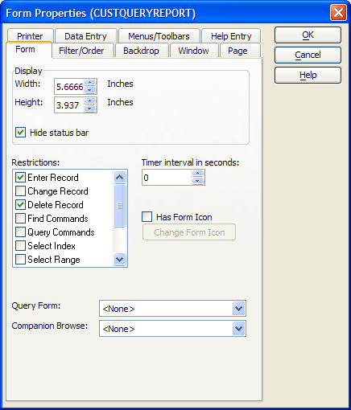

Setting Form Restrictions
It is possible for you to prevent your user from using any of the following functions when viewing a table through a form.
|
Restriction |
Prevents the user from ... |
|
Enter Record |
entering a new record. |
|
Change Record |
saving a changed record. |
|
Delete Record |
deleting a record. |
|
Find Commands |
using the Find by Key function (Control K). |
|
Query Commands |
using the Query by Form (Control B), Quick Filter, and Query Genie (Control Q) functions. |
|
Select Index |
using the Select Index/Query function (Control I). |
|
Select Range |
selecting the Records/Advanced/Apply Range command to order and/or filter the current selection of records. |
|
Navigate |
navigating from the current record to any other record. |
|
Open/Edit Layouts |
using the Design function. |
|
Continuous Enters |
automatically beginning a new record when pressing Enter or Tab when in the last field of a new record. |
|
Browse Mode |
switching the form to browse view (F8). |
The following procedure assumes that the developer has opened the form in the Form Editor. Follow these instructions to set form restrictions similar to those of CustQueryReport :
Right click on the form's background (avoiding all placed objects).
Select Properties....
In the Restrictions list of the Form tab place checkmarks next to the "Enter Record" and "Delete Record" items.
Click the OK button to return to the Form Editor.
